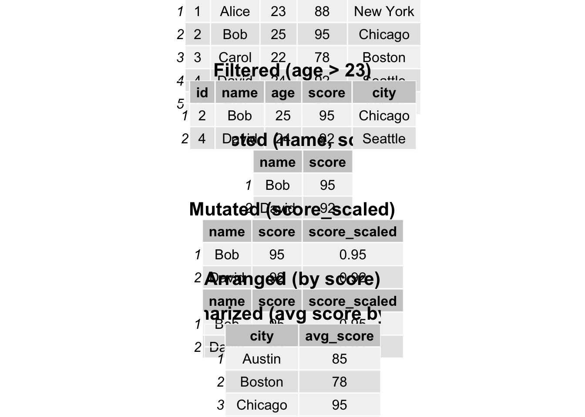

insurance_url <- "https://raw.githubusercontent.com/stedy/Machine-Learning-with-R-datasets/master/insurance.csv"
insurance <- read.csv(insurance_url)10 Data Frames
While R has many different data types, the one that is central to much of the power and popularity of R is the data.frame. A data.frame looks a bit like an R matrix in that it has two dimensions, rows and columns. However, data.frames are usually viewed as a set of columns representing variables and the rows representing the values of those variables. Importantly, a data.frame may contain different data types in each of its columns; matrices must contain only one data type. This distinction is important to remember, as there are specific approaches to working with R data.frames that may be different than those for working with matrices.
10.1 Dataset
The insurance dataset is described in the book Machine Learning with R by Brett Lantz. The dataset describes medical information and costs billed by health insurance companies for 1338 individuals in 2013, as compiled by the United States Census Bureau.
Variables include:
- age
- age of primary beneficiary
- sex
- insurance contractor gender, female, male
- bmi
- Body mass index, providing an understanding of body, weights that are relatively high or low relative to height, objective index of body weight (kg / m ^ 2) using the ratio of height to weight, ideally 18.5 to 24.9
- children
- Number of children covered by health insurance / Number of dependents
- smoker
- Smoking status
- region
- the beneficiary’s residential area in the US, northeast, southeast, southwest, northwest.
- charges
- Individual medical costs billed by health insurance
We will load the data directly from the web, but you can also download the data from the link at github1.
1 Insurance data csv file, https://raw.githubusercontent.com/stedy/Machine-Learning-with-R-datasets/master/insurance.csv
Explore the dataset a bit to understand its structure and contents. For example, you can use the head() function to view the first few rows of the dataset.
head(insurance) age sex bmi children smoker region charges
1 19 female 27.900 0 yes southwest 16884.924
2 18 male 33.770 1 no southeast 1725.552
3 28 male 33.000 3 no southeast 4449.462
4 33 male 22.705 0 no northwest 21984.471
5 32 male 28.880 0 no northwest 3866.855
6 31 female 25.740 0 no southeast 3756.622And you can examine the dimensions of the dataset using the dim(), which returns the number of rows and columns in the dataset, the ncol() function, which returns the number of columns, and the nrow() function, which returns the number of rows.
Note that with the dim() function, the number of rows is given first, followed by the number of columns.
Notice that, while the BMI variable represents a measure of a person’s weight relative to their height, there is no discrete variable for whether a person is obese or not. The World Health Organization (WHO) defines obesity as a BMI greater than or equal to 30. We can create a new variable, obese, that indicates whether a person is obese based on their BMI.
insurance$obese <- ifelse(insurance$bmi >= 30, "obese", "not obese")If we examine the dataset again, we can see that the new variable obese has been added to the dataset.
head(insurance) age sex bmi children smoker region charges obese
1 19 female 27.900 0 yes southwest 16884.924 not obese
2 18 male 33.770 1 no southeast 1725.552 obese
3 28 male 33.000 3 no southeast 4449.462 obese
4 33 male 22.705 0 no northwest 21984.471 not obese
5 32 male 28.880 0 no northwest 3866.855 not obese
6 31 female 25.740 0 no southeast 3756.622 not obese10.2 Inspecting data.frames
There are a few functions that are useful for inspecting the contents of a data.frame:
- Overviews of content
- Size
-
dim()for dimensions (rows, columns) nrow()ncol()-
object.size()for power users interested in the memory used to store an object
-
- Data and attribute summaries
-
colnames()to get the names of the columns -
rownames()to get the “names” of the rows–may not be present -
summary()to get per-column summaries of the data in the data.frame.
-
# Show the first few rows
head(insurance) age sex bmi children smoker region charges obese
1 19 female 27.900 0 yes southwest 16884.924 not obese
2 18 male 33.770 1 no southeast 1725.552 obese
3 28 male 33.000 3 no southeast 4449.462 obese
4 33 male 22.705 0 no northwest 21984.471 not obese
5 32 male 28.880 0 no northwest 3866.855 not obese
6 31 female 25.740 0 no southeast 3756.622 not obese# Show the last few rows
tail(insurance) age sex bmi children smoker region charges obese
1333 52 female 44.70 3 no southwest 11411.685 obese
1334 50 male 30.97 3 no northwest 10600.548 obese
1335 18 female 31.92 0 no northeast 2205.981 obese
1336 18 female 36.85 0 no southeast 1629.833 obese
1337 21 female 25.80 0 no southwest 2007.945 not obese
1338 61 female 29.07 0 yes northwest 29141.360 not obese# Get the dimensions of the data.frame
dim(insurance)[1] 1338 8# Get the number of rows and columns
nrow(insurance)[1] 1338ncol(insurance)[1] 8# Get the names of the columns
colnames(insurance)[1] "age" "sex" "bmi" "children" "smoker" "region" "charges"
[8] "obese" # Basic summary of the data
summary(insurance) age sex bmi children
Min. :18.00 Length:1338 Min. :15.96 Min. :0.000
1st Qu.:27.00 Class :character 1st Qu.:26.30 1st Qu.:0.000
Median :39.00 Mode :character Median :30.40 Median :1.000
Mean :39.21 Mean :30.66 Mean :1.095
3rd Qu.:51.00 3rd Qu.:34.69 3rd Qu.:2.000
Max. :64.00 Max. :53.13 Max. :5.000
smoker region charges obese
Length:1338 Length:1338 Min. : 1122 Length:1338
Class :character Class :character 1st Qu.: 4740 Class :character
Mode :character Mode :character Median : 9382 Mode :character
Mean :13270
3rd Qu.:16640
Max. :63770 In RStudio, there is an additional function, View() (note the capital “V”) that opens the first 1000 rows (default) in the RStudio window, akin to a spreadsheet view.
View(insurance)10.3 Accessing variables (columns) and subsetting
In R, data.frames can be subset similarly to other two-dimensional data structures. The [ in R is used to denote subsetting of any kind. When working with two-dimensional data, we need two values inside the [ ] to specify the details. The specification is [rows, columns]. For example, to get the first three rows of insurance, use:
insurance[1:3, ] age sex bmi children smoker region charges obese
1 19 female 27.90 0 yes southwest 16884.924 not obese
2 18 male 33.77 1 no southeast 1725.552 obese
3 28 male 33.00 3 no southeast 4449.462 obeseNote how the second number, the columns, is blank. R takes that to mean “all the columns”. Similarly, we can combine rows and columns specification arbitrarily.
insurance[1:3, 1:3] age sex bmi
1 19 female 27.90
2 18 male 33.77
3 28 male 33.00Because selecting a single variable, or column, is such a common operation, there are two shortcuts for doing so with data.frames. The first, the $ operator works like so:
# Look at the column names, just to refresh memory
colnames(insurance)[1] "age" "sex" "bmi" "children" "smoker" "region" "charges"
[8] "obese" # Note that I am using "head" here to limit the output
head(insurance$age)[1] 19 18 28 33 32 31# What is the actual length of "symbol"?
length(insurance$age)[1] 1338The second is related to the fact that, in R, data.frames are also lists. We subset a list by using [[]] notation. To get the second column of insurance, we can use:
head(insurance[[2]])[1] "female" "male" "male" "male" "male" "female"Alternatively, we can use the column name:
head(insurance[["age"]])[1] 19 18 28 33 32 3110.3.1 Some data exploration
There are a couple of columns that include numeric values. Which columns are numeric?
class(insurance$age)[1] "integer"class(insurance$obese)[1] "character"class(insurance$children)[1] "integer"
Attaching package: 'dplyr'The following object is masked from 'package:gridExtra':
combineThe following objects are masked from 'package:stats':
filter, lagThe following objects are masked from 'package:base':
intersect, setdiff, setequal, union# Original DataFrame
df <- data.frame(
id = c(1, 2, 3, 4, 5),
name = c("Alice", "Bob", "Carol", "David", "Eve"),
age = c(23, 25, 22, 24, 23),
score = c(88, 95, 78, 92, 85),
city = c("New York", "Chicago", "Boston", "Seattle", "Austin")
)
# Filter
df_filtered <- df %>% filter(age > 23)
# Select
df_selected <- df_filtered %>% select(name, score)
# Mutate
df_mutated <- df_selected %>% mutate(score_scaled = score / 100)
# Arrange
df_arranged <- df_mutated %>% arrange(desc(score))
# Summarize
df_grouped <- df %>%
group_by(city) %>%
summarize(avg_score = mean(score))
# Function to create table grobs
create_table_grob <- function(df, title) {
table_grob <- tableGrob(df)
title_grob <- textGrob(title, gp = gpar(fontsize = 16, fontface = "bold"))
padding <- unit(0.5, "line")
table_grob <- gtable::gtable_add_rows(table_grob, heights = grobHeight(title_grob) + padding, pos = 0)
table_grob <- gtable::gtable_add_grob(table_grob, list(title_grob), 1, 1, 1, ncol(table_grob))
table_grob
}
# Creating table grobs
original_grob <- create_table_grob(df, "Original DataFrame")
filtered_grob <- create_table_grob(df_filtered, "Filtered (age > 23)")
selected_grob <- create_table_grob(df_selected, "Selected (name, score)")
mutated_grob <- create_table_grob(df_mutated, "Mutated (score_scaled)")
arranged_grob <- create_table_grob(df_arranged, "Arranged (by score)")
summarized_grob <- create_table_grob(df_grouped, "Summarized (avg score by city)")
# Arrange tables in a grid
grid.arrange(
original_grob, filtered_grob,
selected_grob, mutated_grob,
arranged_grob, summarized_grob,
nrow = 6
)